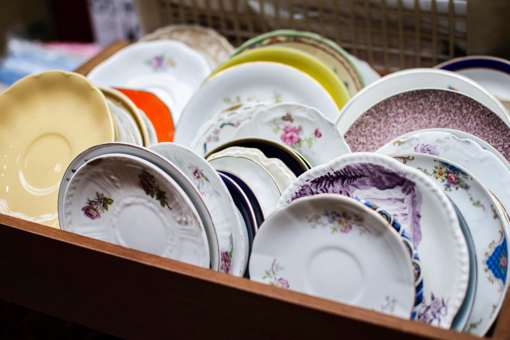
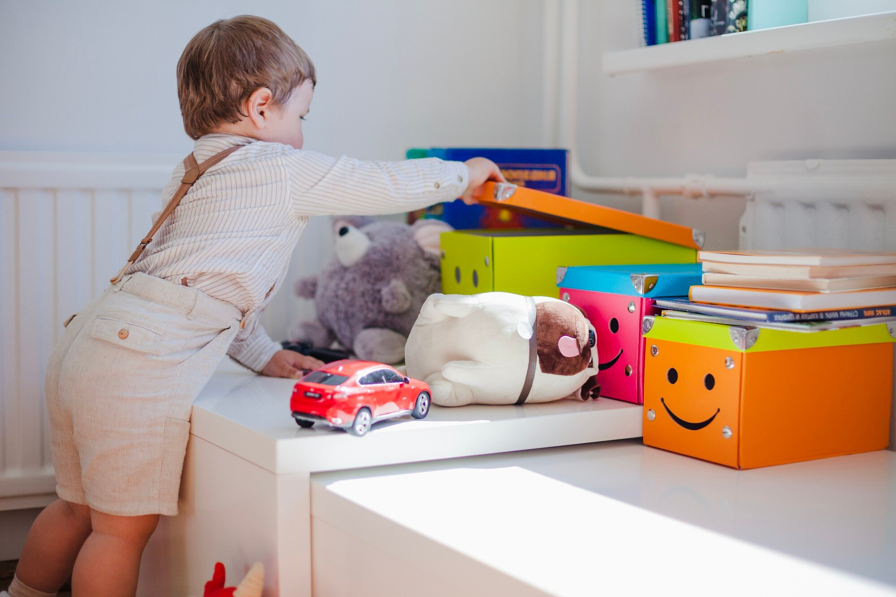

Bazar envolé, esprit libéré !
Je suis Laurie Estavoyer, professionnelle de l’organisation.
J’ai créé Bazar Envolé afin de vous accompagner dans le tri, le désencombrement et le rangement. Mon métier consiste à transformer vos espaces de vie afin qu’ils soient organisés et fonctionnels. J’analyse vos problématiques d’organisation et je recherche des solutions personnalisées que l’on mettra en œuvre ensemble. Je m’adapte à vos besoins et contraintes pour créer un espace de vie qui vous ressemble et dans lequel vous vous sentez bien.
Que vous recherchiez à réaménager une pièce, optimiser un espace ou repenser l’organisation globale de votre maison, je suis là pour vous guider étape par étape afin d’attribuer une place pertinente et fonctionnelle à chaque objet.
J’interviens également à des moments clés de la vie comme un décès, un départ en maison de retraite, une maladie ou encore une séparation en vous apportant un réel soutien dans cette épreuve.
Je travaille avec vous dans le plus grand respect de votre espace et de vos attentes, en vous accompagnant sans jugement. Tous nos échanges et informations resteront confidentiels, assurant ainsi un cadre de confiance et de sécurité tout au long de mon accompagnement.
Travailler avec moi c’est :
- Retrouver de l’énergie et du temps pour profiter de vos proches
- Apprendre de nouvelles méthodes afin de simplifier votre quotidien
- Avoir un réel soutien lors d’une évolution de vie (décès, divorce, départ en maison de retraite, déménagement, maladie, naissance...etc.)
- Travailler avec plus d’efficacité et rendre plus facile votre démarche de renouveau.
- Être accompagné par une personne rigoureuse et à l’écoute


À qui s’adressent les services de Bazar Envolé ?
Vous vous sentez dépassé par le désordre chez vous, que ce soit dans votre salle à manger ou votre salle de bain ? Vous manquez de temps et de méthode pour pouvoir ranger ? Ensemble, nous allons effectuer du tri et rendre votre espace de vie plus agréable et fonctionnel. L’objectif est de trouver des solutions adaptées à chaque membre de la famille pour moins de stress au quotidien.
Déménagement, divorce, naissance, départ en maison de retraite, décès, maladie... Les changements de vie impliquent souvent de réorganiser certains espaces et des prises de décisions importantes. Je vous accompagne afin de rendre cette étape plus facile et de la transformer en un véritable moment de vie et de partage.
Un bureau organisé et fonctionnel est essentiel pour être productif et efficace dans son travail. Il est donc important de vous créer un espace qui favorise la concentration et dans lequel vous vous sentez bien. De plus, je vous aide à créer un espace où ranger vos documents qui soient logique et facile d’accès.
Avec l’âge, alléger et sécurisé son environnement est primordial. J’accompagne les personnes âgées dans le tri et le réaménagement de leur espace pour que leur maison ou appartement soit un lieu sûr, accessible et agréable. De plus, il arrive souvent que les personnes âgées souhaitent effectuer du tri afin d’éviter à leurs enfants, pour la plupart, d’avoir à faire cela le jour où ils ne seront plus là.
Votre enfant n’arrive pas à maintenir sa chambre rangée car il voit cela comme une corvée ? Sa chambre est envahie de jeux/jouets et vous ne savez plus où donner de la tête ? Il n’a même plus d’espace pour effectuer ses devoirs ? Je vous accompagne dans l’apprentissage et la transmission de méthodes adaptées à votre enfant pour lui permettre de comprendre l’importance d’avoir un espace rangé tout en rendant cela ludique et amusant.
Les étapes de mon accompagnement
Suivi post-intervention :
Une fois la mission réalisée, je m’engage à vous recontacter un mois plus tard par téléphone afin de faire le point ensemble sur la situation.

Jour de l’intervention :
« Passage à l’action » : Une fois le devis accepté, j’interviens directement à votre domicile afin de vous aider dans la prise de décision. Ensemble, nous allons trier, désencombrer et réorganiser vos espaces à votre rythme ! Je vous apporte des conseils, des solutions de rangement adaptées mais aussi et surtout un réel soutien dans votre démarche.
Visite diagnostic :
Je me rends à votre domicile pour une durée d’1h30 afin d’échanger davantage sur vos habitudes de vie et de mieux comprendre vos besoins spécifiques. En effet, vous allez pouvoir me montrer le ou les espaces concernés, ce que vous avez imaginé une fois mon intervention passée, et de mon côté, je vais pouvoir dresser un état des lieux précis de la situation pour vous proposer un accompagnement qui vous correspond (espace disponible, contraintes, blocages...etc.)
Appel découverte :
Gratuit, sans engagement et d’une durée de 15 à 30min, c’est un premier contact entre vous et moi afin de comprendre vos besoins et de vous présenter ma façon de travailler. Durant cet échange, je répondrai à toutes vos questions et vous pourrez me faire part de vos difficultés actuelles (désordre, accumulation d’objets, manque de temps...etc.) ainsi que de vos attentes.
Basée à Thise, j’interviens autour de Besançon jusqu’à 80km
Témoignages
La manière dont nous avons procédé au tri et au rangement de mon dressing a parfaitement répondu à mes attentes. Elle m'a guidé avec professionnalisme et douceur, en respectant mon rythme et en me proposant des solutions adaptées à mes habitudes de vie.
Le résultat est remarquable : la fonctionnalité de la pièce a été grandement améliorée. Mon dressing est désormais organisé de manière pratique et agréable, ce qui facilite grandement mon quotidien.
Je recommande sans hésitation les services de Mme Estavoyer à toute personne souhaitant optimiser l'espace de son domicile. Sa compétence, sa bienveillance et son sens de l'organisation font une home organiser d'exception.